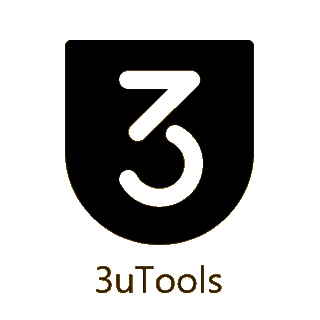
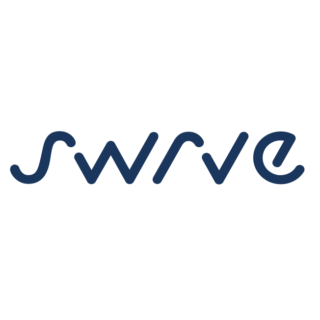

01
Июль 2025 — Настоящее время
July 2025 — Present
Glam Ai
QA Specialist
Тестировщик мобильных приложений и игрMobile app & game tester
Сербия · БелградSerbia · Belgrade
Внимательный и ответственный тестировщик с более чем 3х-летним опытом в ручном тестировании. Тестирую приложения на Android, iOS, Huawei, Amazon и UWP. Оцениваю стабильность, воспроизводимость и влияние ошибок на пользовательский опыт. Уделяю внимание UX/UI и логике игровых механик. Приоритизирую баги и предлагаю решения, способствующие выпуску более качественного продукта. Attentive and responsible tester with over 3 years of experience in manual testing. I test applications on Android, iOS, Huawei, Amazon, and UWP. I evaluate stability, reproducibility, and the impact of bugs on the user experience. I pay close attention to UX/UI and game mechanics logic. I prioritize bugs and propose solutions that contribute to releasing a higher quality product.
Четыре компании. Внимание к деталям в каждой.Four companies. Attention to detail at every one.
QA Specialist
QA Specialist
QA Specialist
QA Engineer
Инструменты и сервисы, с которыми я работаю.The tools and services I work with.

3uTools
SwrveГеворк Акопян · QA SpecialistGevork Akopyan · QA Specialist